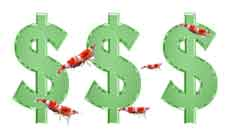
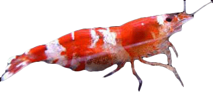
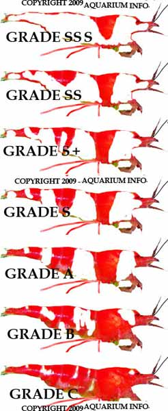
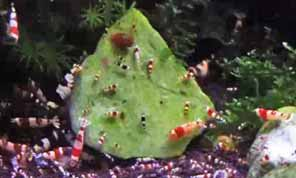

A Guide to making serious $$$ with CRS shrimp
HOW TO BREED AND SELL CRS SHRIMP

Money making schemes can be extremely successful if properly executed, this does not have to be a large scale opperation,
even those with small tanks will be able to turn over large sums of money. Wouldnt it be great to enjoy the hobby
and bring in a small bonus?
You may be asking HOW?? Well CRS shrimp are rare and exotic creatures, they
command medium to extremely high prices depending on their grade. Breeding the shrimp is not a long nor
difficult process, they will readily spawn around once a month, if you have multiple females this can mean a
lot of young baby shrimp!.
Before attempting this money-guide make sure you have a composite knowledge
of CRS, check out A GUIDE TO CRS for more information on Crystal Red Shrimp.
This will supply you with the basic knowledge and understanding to send you on your way.
To make money with the crs, it is necessary to successfully breed them. Do not be afraid of the high price tags they
command, because they will sell for the same price. In this way it is very hard to lose money. If I bought ten A grade
crystal red shrimp at this instant from a breeder and left them in my tank for a week, I could sell them back for the
price I bought them on the same market due to their high demand. As long as you are sensible in having the right water
qualities and you make sure not to overfeed them, it is hard to go wrong.

Breeding the Shrimp

- When you buy the shrimp you will want to buy the best quality you can afford but be aware that as the quality increases so
does the sensitivity of the shrimp. A grade are a common choice and are seen to sell anywhere between $5-15 a piece, when
you buy these make sure to purchase around 10 to assure a good mix of the sexes.
- B and C grade should be avoided,
they will be of little use in building profit due to their lower prices. S, S+ and SS are great to begin with because
there offspring will undoubtedly be of a higher caliber compared to lesser grades, which means a bigger profit margin.
S, S+ and SS grades will have a much higher initial cost, but it is well worth the investment.
- You will want to begin breeding the shrimp ASAP. For more in depth information in this step visit
CRS Guide.
Feed them a varied diet to maintain healthy offspring and keep them in a good mood. Make sure the temperature is at 23 and the
pH value is in the preferred softer range of 6-7.

Grading and Sorting Young

- If everything is upkept you will soon have tiny crs shrimplets swimming around your aquarium (a very good feeling). When they grow to around 1cm in length look at the colours on them, at this stage it is fairly easy to pick out your higher grades.
- From a pregnant A grade shrimp , she gave birth to 2x Hino’s, a S grade and around 10 A grade shrimplets.
- The Hino type CRS will sell from about $70-300 a piece depending on your country and what is the current demand.
The S+ grade shrimp are very popular selling for around 40-50 dollars apiece.
- With the good offspring,
it is best to separate them into a different tank. This is a means of "selectively breeding" the shrimp to obtain
higher grades. The lower grades can be discarded or sold cheap (B and C), but the A offspring should be kept for
breeding and eventually sold when there are enough in your tank.
- Following this method you will soon end up
with a tank full of A grade shrimp and a tank with more than a few Hino’s and maybe even a Mosura (SSS). When you
reach about 10 high quality shrimp it is probably a good idea to sell about half, or you risk having them all
being wiped out by a freak event. Make sure you do not sell your larger females or berried females as these
will be the most crucial to the reproduction of your Shrimp.
- CRS will give birth about once a month
(sometimes longer) if you are lucky and the shrimplets will be able to reproduce in 1 -2 months time.
Usually from a batch of fry I am able to keep around 10 alive until they are fully grown. If there are around
5 or 6 females in the tank this will mean's about 50 shrimplets a month, which, at an average price of $20ea,
is at least $1000 dollars, thats alot of money for only 5 female shrimp.
Over time

- As you can see over time it will definitely stack up to be a lot of money. Within each batch of fry from an SS grade,
I have counted at least 3 SS grade being produced every time, proving it is easy to push your profit margins even further
and increasing your avergae price.
- Why has no one else thought of this idea? Well the fact is a lot of people
have thought of this idea and some people use it. Why do you think people pay such ridiculous prices for higher quality
shrimp? Sure it may be because they like the white, but probably because they plan to breed them. And so in this way the
cycle goes on, the price stays high, the demand is always up and people are constantly breeding. Because of there inbred
genes, it makes them more fragile and so even though many people are breeding these precious animals, many are dyeing
in the hands of amateurs, travel packaging and from disease.
- Of course this method is not foolproof. You have to be able to successfully keep any kind of shrimp alive without any
health problems before this method can be attempted. CRS are not the easiest shrimp to care for, but once you are setup
and know what you are doing there should be no problems.
- Now that you have successfully bought and constructed your
very first aquarium, you are an accomplished aquarist. Why not impress your friends and family by turning your aquarium
into a natural planted aquarium. Aquatic plants grow and live in the aquarium and make any aquascape truely beautiful.
Click on the link below and continue.